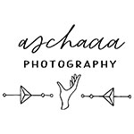
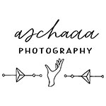

Bio
I am a marketing professional with over 13 years of experience in marketing strategy and content marketing. In the last couple of years, I have been mainly focusing on content creation for digital channels, SEO, and data analytics.
I am currently studying for a master's degree in Content Strategy at FH Joanneum. Once completed (2025), I look to transition to a marketing operations-focused role.
Fun fact!The first money I earned off content creation? I was in secondary school. I came up with the idea of drawing Pokémon made to order and colouring them in with pencils. Unfortunately, my so-called “friend” set up a competing business and coloured her Pokémon drawings with permanent markers. The quality was much better, and she also scaled her production (younger brother). I had to shut down the store after only three commissions.
Quick Facts
I am based in Vienna, Austria.
My name is pronounced ah-neh-tah.
I have 13 years of experience in marketing.
I am a coffee addict.
I like creating - writing, taking photos, and cooking.
I am a millennial, but I don't like avocado toast. (Can't afford it anyway).
I am a committed lifelong learner.
Skills
(Copy)Writing
Graphic Design for Digital Channels
On-Page SEO
Photography
Project Management
WordPress Websites & Landing Pages
Work Experience
October 2023 - present
Bildungskarenz - Master's in Content Strategy at FH Joanneum Graz, Austria
March 2023 - October 2023
Marketing Communications Manager at Female Founders, Austria
July 2022 - February 2023
SEO and Content Manager at HENSOLDT Analytics, Austria
May 2021 - July 2022
Social Media Manager at HENSOLDT Analytics, Austria
December 2020 - April 2021
Professional Break
April 2020 - November 2020
Content Marketing and SEO Manager at Impact Hub Vienna, Austria
March 2016 - October 2020
Content Marketing Consultant, Austria
December 2019 - February 2020
Interim Comms Lead at Impact Hub Vienna, Austria
September 2017 - November 2017
Communications and Marketing Manager at International Solid Waste Association (ISWA), Austria
November 2014 - June 2015
Marketing Manager at Fleming Europe, Slovakia
January 2014 - October 2014
Marketing Assistant at Print Power Europe, England
September 2013 - December 2013
Junior Conference Manager at InForm Slovakia, Slovakia
January 2013 - September 2013
Category Coordinator at Avon, England
June 2010 - July 2012
Marketing intern at: the University of Northampton, MyBetShare
Freelance Work
Some of the companies and initiatives I collaborated with
 



Work Samples
Education and Certificates
October 2023 - October 2025
MA Content Strategy at FH Joanneum
September 2009 - May 2012
BA Advertising and PR at the University of Northampton, England
Selected Certificates
- Business Fundamentals: Project Management from The Open University Business School
- LinkedIn Marketing Solutions Fundamentals from LinkedIn
- Learning How to Learn by Deep Teaching Solutions
Hobbies
Photography
Cooking
Reading
Let's Connect
Visit my website to find out more about what I am up to now - www.anetakpawlik.eu
Connect with me on LinkedIn
Made with a lot of 😭 © Aneta Pawlik